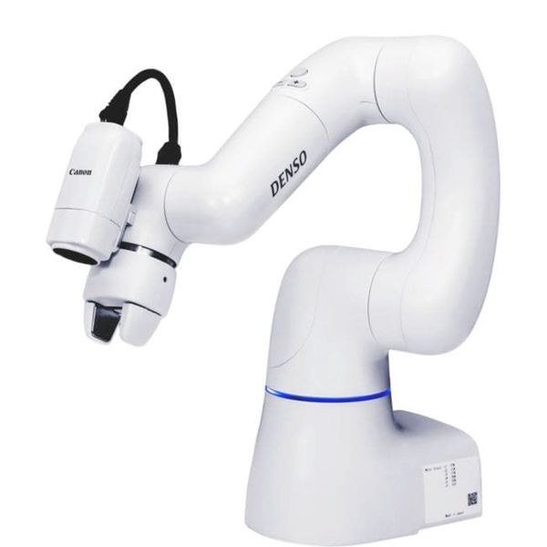
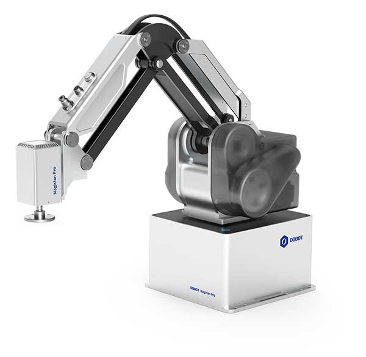
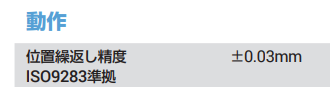
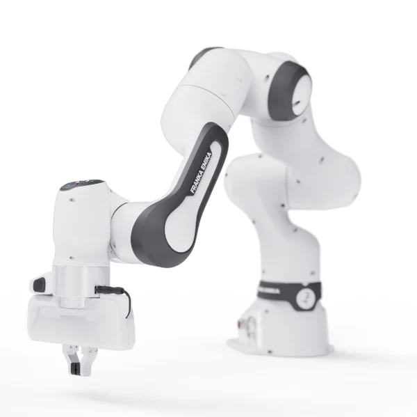
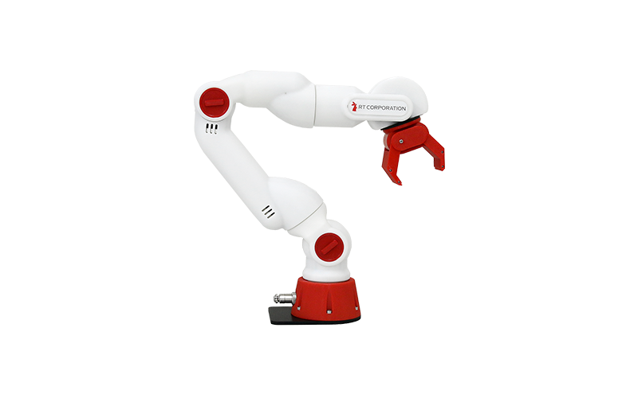
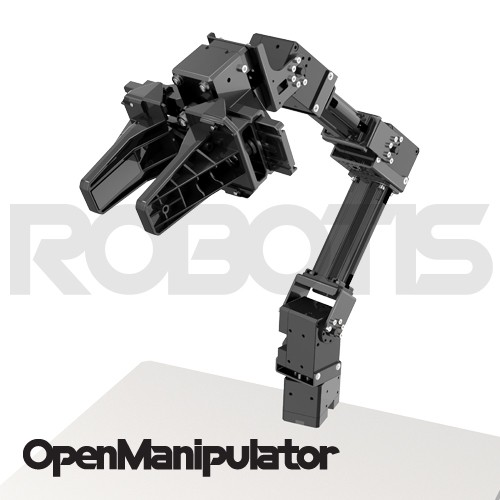

ゼロからのロボットアーム入門
大阪大学 中島優作
はじめに
- 本講義の目標
- 対象者
- 内容
- この資料はロボットの中でもロボットアームに特化した内容です
- AVRなどの移動ロボットは対象外です
- モノを掴んで運ぶなど簡単な動きを作ることを目的としています
- 本講義でやらないこと
目次
- ロボットアームの操作
- ロボットアームの選定
ロボットアームの操作
ロボットアームを動かすための基礎知識
目的に応じたロボット制御方法
手先位置・姿勢の制御

本スライド
- まず動かしてみたい
- 直線等のシンプルなモーションでモノの移動ができれば十分
関節角度の制御

ROS入門へ(別スライド)
- 複雑な動きや制御を作りたい
- 様々なメーカーのロボットやセンサを統合したシステムを作りたい
オススメ参考資料
- ロボット制御学ハンドブック
- ROSロボットプログラミング
産業用ロボットTheビギニング
ここの資料で説明しているような産業用ロボットの基礎的な情報を網羅
イラストで学ぶロボット工学
初歩的な内容を網羅的に扱っていて
最初に読むのにちょうど良い
まずは8章まで読むのがよい
最も基本の位置制御まで扱っている
ロボットを動かす方法
- 順運動学
- 逆運動学
ティーチングペンダント(TP)
- タブレット端末で操作
- 最近は物理的な端末がなくTPソフトウェアもある
- 設定や動作テストで使う
プログラミング
- 研究で使うのは基本こっち
- Python等で外部制御
- センサ等との統合も可能
基本的な動かし方
- ROSの概要
- MoveIt!の概要
重心設定
- Tool Center Point(TCP)を登録
- ロボットを動かす座標を登録
ロボットのモーションを選択
- 座標をたくさん用意してプログラムで動作
- プログラムはロボット用の言語もあるが、最近はpythonで動くものをロボットメーカーが用意してくれていることが多いのでそれを使うと便利
ロボットアームの手先(TCP)

乳棒とヘラがエンドエフェクタ
TCPは乳棒の先端

グリッパがエンドエフェクタ
TCPはグリッパの中央(が多い)
ロボットの手先の座標をTool Center Point(TCP)と言う
TCPは複数登録/切り替え可能
2つ以上ツールを持たせる場合に便利
ロボットアームの構造

ジョイント(関節)
モーターが入っている関節に相当する部分
リンク
ジョイントを繋ぐ部分
剛性が高い方がロボット動作の精度が良くなる
エンドエフェクタ(手先効果器)
作業をする手先
作業に応じて付け替える
2本指や5本指のハンド
吸盤
FAプロダクツより引用(https://jss1.jp/column/column_162/)
ロボットの座標(pose)

関節座標系
6軸(or 7軸)それぞれの角度を指定
図はhttps://www.mirai-lab.co.jp/all/1101より引用

ベース座標系
ロボットの根本を基準に直交座標系で指定

ツール座標系
ロボットの手先を基準に直交座標系で指定
姿勢=位置+向き

位置(position)
XYZ座標
向き(orientation)
様々な表現があるが、最も簡単なのはXYZそれぞれの軸の回転で表現(オイラー角という)
姿勢 = 位置 + 向きで表現できる
バイオメカニクスにおけるモーションセンサの利用
(https://www.mirai-lab.co.jp/all/1101)より引用
ロボットアームの軸の数はなぜ6が多い
位置(XYZ) + 向き(XYZ) → 姿勢
3次元 3次元 6次元
つまり6次元の姿勢を作るには最低限6軸(6次元)のロボットが必要
目的のタスクに合わせて適切な軸数を選ぶ必要がある

4軸ロボットの例
常に下向きという姿勢制限がある
例)モノの移動はできるが向きを変えられない
Dobot MG400
Dobot Magician E6

6軸ロボットの例
位置も向き自由に動かせる
ロボットのモーションの種類

PTP
- ロボット関節が最短
- 動きが速い
LIN
- 直線の動き
- 動きに制限あり
CIRC(ARCの場合もある)
- 円弧の動き
- 障害物をよける場合
連続的なロボットモーション

複数の姿勢(waypoints)を指定することで、任意の場所を通る動きを作ることができる
ただし、通常の動きだと各点ごとに停止するのがなので動きがガタついてしまい、そのままでは滑らかな動きにならない
滑らかなモーションの作り方
- スプライン補間
- 最小躍度軌道
複数の姿勢(waypoints)を滑らかに繋ぐために厳密にwaypointsを通らない処理を行います
ロボットメーカーごとに呼び方が異なりますが、大体どのロボットにも搭載されています
例)Denso: パス動作
UR:ブレンド半径
ロボットアームの精度について
ロボットの仕様に書かれているのは位置決め精度ではない
あくまで、同じ動作を繰り返したときの精度
特にロボットの電源を切った際に、位置がリセットされる
位置決め精度良く動作させたい場合は、ロボットの電源を切らずに動かす必要がある


https://www.universal-robots.com/media/1807723/32528_ur_technical_details_ur5e_jp.pdf
URのプログラム例
URはRTDEを使って外部制御が可能で、Ur_rtdeをpipでインストール可能
例のように、目標の座標とモーションの種類を指定して動作可能
- PTP = moveJ
- LIN = moveL
- CIRC = moveC
import rtde_control
import rtde_receive
import time
robot_ip = "URロボットのIPアドレス"
rtde_c = rtde_control.RTDEControlInterface(robot_ip)
rtde_r = rtde_receive.RTDEReceiveInterface(robot_ip)
try:
# PTP動作 (関節空間)
# 関節角度をラジアンで指定
target_joints = [0.1, -1.2, 2.3, -1.5, 0.5, 0.0] #ラジアン表記
rtde_c.moveJ(target_joints, 1.0, 0.5) # 速度1.0rad/s, 加速度0.5rad/s^2
time.sleep(5)
# LIN動作 (ベース座標系)
# ベース座標系での目標TCP位置を指定, [x, y, z, rx, ry, rz] (単位: [m, rad])
target_pose_base = [0.3, 0.4, 0.5, 0.0, 0.0, 0.0]
rtde_c.moveL(target_pose_base, 0.5, 0.3) # 速度0.5m/s, 加速度0.3m/s^2
time.sleep(5)
# CIRC動作 (ツール座標系)
# ツール座標系での中間点と目標点のTCP位置を指定, [x, y, z, rx, ry, rz] (単位: [m, rad])
via_pose_tool = [0.1, 0.1, 0.0, 0.0, 0.0, 0.0]
to_pose_tool = [0.2, 0.0, 0.0, 0.0, 0.0, 0.0]
rtde_c.moveC(via_pose_tool, to_pose_tool, 0.5, 0.3, pose_tool=True) # 速度0.5m/s, 加速度0.3m/s^2
time.sleep(5)
finally:
rtde_c.disconnect()
rtde_r.disconnect()
サンプルコードを実行しても安全は保障できません
危ない座標を指定していないか確認してから実行してください
以上でロボットの基本動作はできるはず
Let’s enjoy robot!
もっと複雑な制御やセンサの統合をやりたい方は、
「ゼロからのROS入門」へ
粉体粉砕をしたい方は
「粉体粉砕パッケージの解説」へ
ロボットアーム選定
ロボットアームの選び方
ここでは協働ロボットを対象にしています
ざっくり４種類
高価格
多機能
(≠多用途)
低価格
単機能
垂直多関節ロボット

水平多関節ロボット(SCARA)

パラレルリンクロボット

双腕ロボット

協働ロボット

人型ロボット

移動ロボット

産業用ロボット系列
- FANUC
- Yaskawa
- Kawasaki
- Denso
- Universal Robots
従来産業用ロボットを作っていたメーカが販売している協働ロボットが多く、ハードウェアは比較的しっかりしている
産業用ロボットの出力を落として安全機能を追加した形式が多い印象
一方でソフトウェアがFA(ファクトリーオートメーション)ベースなので、FAに慣れていないと使いにくい
また、外部制御も限定的でROS等の外部ソフトウェアから使いにくい
高機能協働ロボット
- UR
- Franka Emika
- DOBOT
機能を妥協していない協働ロボット
ロボティクス分野でマニピュレーションの研究をする場合によく使われる
外部制御をオープンにしており、ROS等の外部ソフトウェアからほとんどの機能を制御可能
中華系ロボット
- Unitree
- Robosen
- Xiaomi
とにかく安い
ハードウェアのクオリティがあまり高くない
とはいえ、用途によっては十分
ソフトウェアは比較的使いやすく
特にPythonからの制御が整備されている
外部制御性はあまり高くなく、産業用ロボット系列と同程度の印象
教育用ロボット
- LEGO Mindstorms
- mBot
- Raspberry Pi
3Dプリンタなどを使うため費用が安く、ハードウェア面は特に剛性が低く精密制御は難しい
ロボット研究では原理検証として使われる
ソフトウェアは比較的使いやすく
特にPythonからの制御が整備されている
外部制御性が高い一方で、便利なGUI等はないためロボット制御の中身を勉強したい人むけ(用途によるが実務にはあまり向かない)
ダントツのオススメロボット
ユニバーサルロボット
あらゆる人(研究者からユーザまで)に
オススメのロボット
圧倒的に使いやすい
使える人がいなくなっても
ロボットが置物になりにくい
値段がボトルネック
(2025年時点で400万円~が目安)